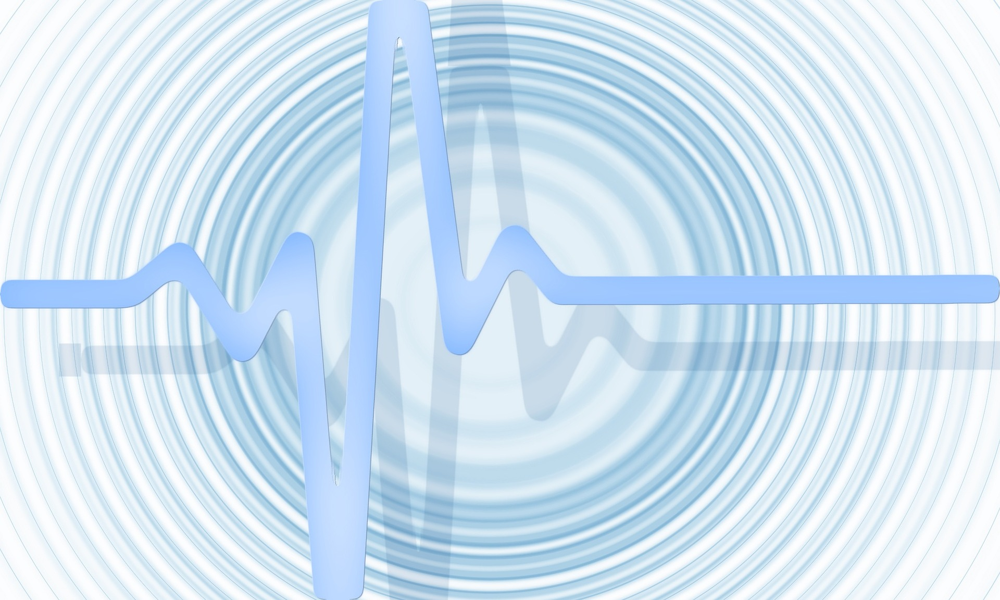

Vagusnerv-Stimulation für tiefe Entspannung und innere Balance — eine moderne Wellness-Anwendung, die den natürlichen Ruhemodus Ihres Körpers unterstützt.
Der Vagusnerv ist der längste Hirnnerv des menschlichen Körpers. Er verläuft vom Hirnstamm durch Hals, Brust und Bauch und verbindet das Gehirn mit den wichtigsten inneren Organen — Herz, Lunge und Verdauungstrakt eingeschlossen.
Als zentraler Bestandteil des parasympathischen Nervensystems spielt er eine wesentliche Rolle für unsere innere Balance. Das parasympathische System ist jener Teil unseres Nervensystems, der für Ruhe, Erholung und Regeneration zuständig ist — der natürliche Gegenpol zu Anspannung und Aktivierung.
VNS-Wellness ist eine zeitgemässe Wellnessanwendung, die sanft auf den Vagusnerv einwirkt und so das natürliche Gleichgewicht des Nervensystems unterstützt. Das Ergebnis: ein tiefes Gefühl von Entspannung und Ruhe, das sich von innen heraus entfaltet.
«Wenn der Vagusnerv in seinem natürlichen Rhythmus schwingt, findet der Körper zu seiner eigenen Stille zurück.»

Natürlicher Rhythmus — Vagusnerv-WellnessEin besseres Verständnis des Vagusnervs hilft dabei, die Tiefe dieser Wellness-Anwendung wirklich zu spüren und wertzuschätzen.
Der Vagusnerv überträgt Signale in beide Richtungen: von den Organen zum Gehirn und zurück. Rund 80 % seiner Fasern sind afferent — das bedeutet, sie tragen Informationen aus dem Körperinneren zum Gehirn. Dieses ständige Rückmelden des Körperzustandes beeinflusst, wie wir uns fühlen, wie wir auf Stress reagieren und wie gut wir zur Ruhe kommen können.
Unsere VNS-Wellness-Anwendung richtet sich ganzheitlich an Körper und Geist. Diese Aspekte stehen dabei im Mittelpunkt.
Die Anwendung fördert einen tiefen Zustand innerer Ruhe und Gelassenheit. Viele Gäste beschreiben das Gefühl als wohltuend erholsam — eine Qualität von Stille, die im Alltag selten erreichbar ist.
VNS-Wellness unterstützt die natürliche Balance zwischen Anspannung und Entspannung. Gönnen Sie Ihrem Nervensystem die Möglichkeit, sein eigenes Gleichgewicht wiederzufinden.
Eine sanfte Unterstützung dabei, den Stress des Alltags loszulassen. Die Anwendung schafft Raum zum Durchatmen — buchstäblich und im übertragenen Sinn.
Ein ganzheitlicher Beitrag zu körperlichem und seelischem Wohlbefinden. Die VNS-Wellness-Anwendung wirkt nicht isoliert, sondern spricht den ganzen Menschen an.
VNS-Wellness fördert ein tiefes Gefühl von Zentriertheit und innerer Stille. Eine Qualität von Gegenwärtigkeit, die weit über die Anwendung selbst hinausreichen kann.
Wer zur Ruhe findet, schläft besser. Die VNS-Wellness-Anwendung unterstützt die natürliche Schlafqualität, indem sie dem Körper hilft, in seinen Erholungsmodus zu gleiten.
Jede Anwendung beginnt mit Ihnen — Ihren Bedürfnissen, Ihrem Tempo, Ihrer persönlichen Ausgangslage. Wir begleiten Sie durch jeden Schritt.
Wir nehmen uns Zeit, um Ihre Wünsche und Ihre aktuelle Lebenssituation kennenzulernen. In einem persönlichen Gespräch klären wir, wie die VNS-Wellness-Anwendung optimal auf Sie abgestimmt werden kann.
In einer ruhigen, sorgfältig gestalteten Atmosphäre erleben Sie die eigentliche VNS-Wellness-Anwendung. Alles ist darauf ausgelegt, Ihnen ein Höchstmass an Entspannung und Wohlbefinden zu ermöglichen.
Nach der Anwendung nehmen wir uns Zeit für Ihre Eindrücke. Wir geben Ihnen Empfehlungen mit auf den Weg, wie Sie das Wohlgefühl im Alltag weiter pflegen können.
Bei jensen healing concept haben Sie die Möglichkeit, VNS-Wellness und Rotlicht-Wellness miteinander zu kombinieren. Beide Anwendungen ergänzen sich auf natürliche Weise: Während die Rotlicht-Anwendung die Oberfläche anspricht, wirkt die VNS-Wellness tief ins innere Gleichgewicht hinein.
Viele unserer Gäste schätzen diese Kombination als besonders wohltuend und berichten von einem tiefen Gefühl der Regeneration, das noch lange nach der Anwendung anhält.
Gönnen Sie sich einen Moment der Stille. Vereinbaren Sie jetzt Ihren persönlichen VNS-Wellness-Termin bei jensen healing concept im Berner Oberland.
Alle Anwendungen verstehen sich als Wellness-Dienstleistungen und ersetzen keine ärztliche Beratung.